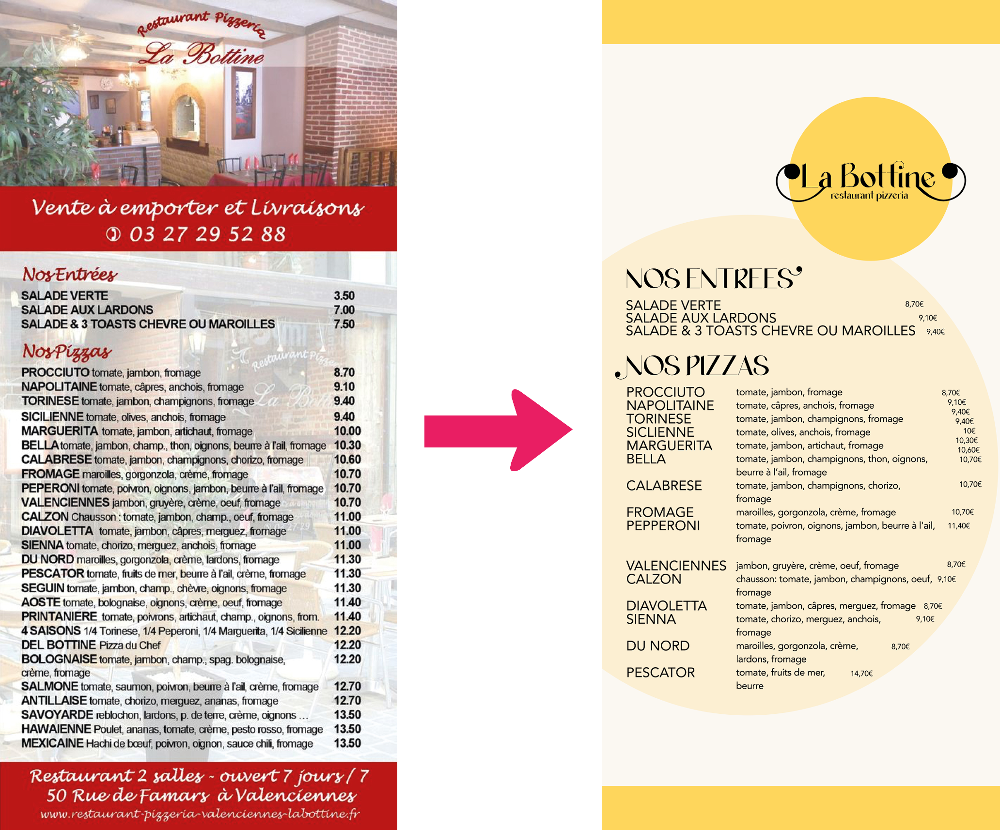
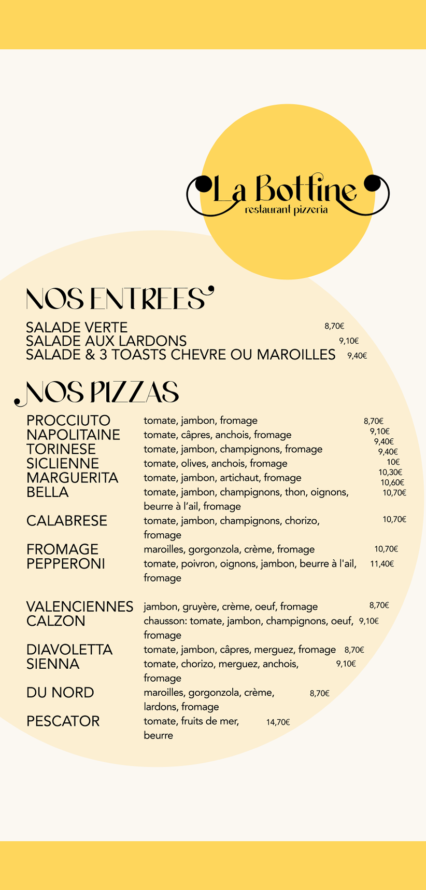

Contexte
Pour cet exercice réalisée en première année, nous devions réaliser une refonte de logo ainsi qu'un flyer pour une pizzeria nommée La Bottine, avec pour objectif de retranscrire à la fois l’esprit italien et l’univers de la pizza.
Démarche
Réalisation et gestion de projet
Pour le logo, j'ai voulu faire quelque chose d'assez simple : rond, comme une pizza.
Logo:

La police à empattements s’inspire des codes typographiques classiques italiens. Le point ondulé du i m’a permis d’intégrer un motif rappelant une moustache stylisée, un élément visuel fréquemment utilisé dans l’imaginaire graphique lié à l’Italie.
Flyer:
Comme vous pouvez le voir, l'ancien flyer était assez daté. J’ai épuré quelques parties du texte, rendant le flyer bien plus visible.
Je trouvais que la photo derrière en fond faisait tâche et rajoutait un peu trop d’éléments ce qui surcharge encore plus le lecteur, donc j’ai décidé de l’enlever et de mettre un fond basique coloré à la place.